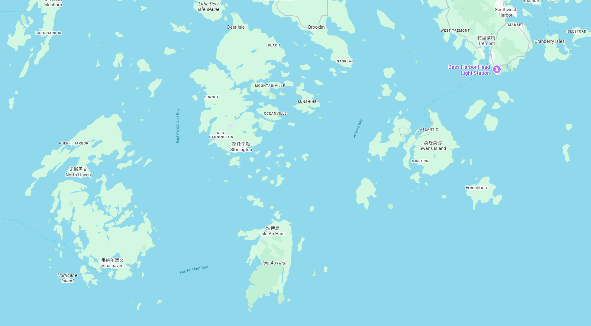
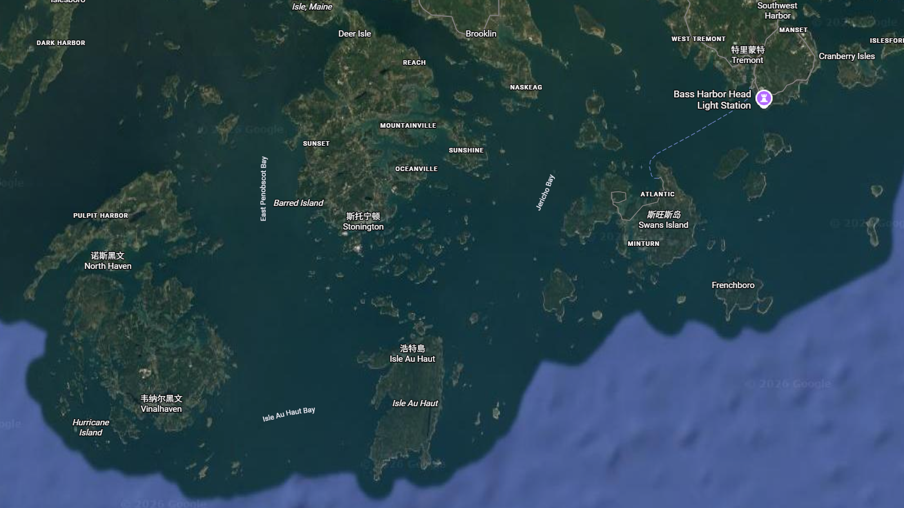
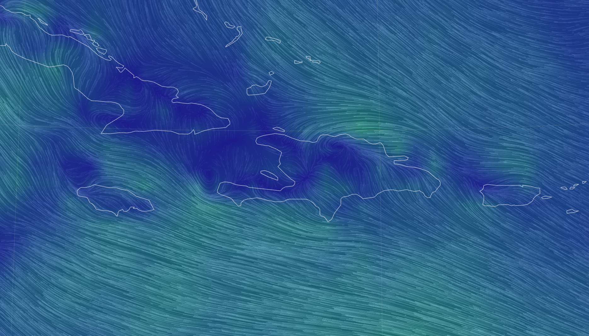
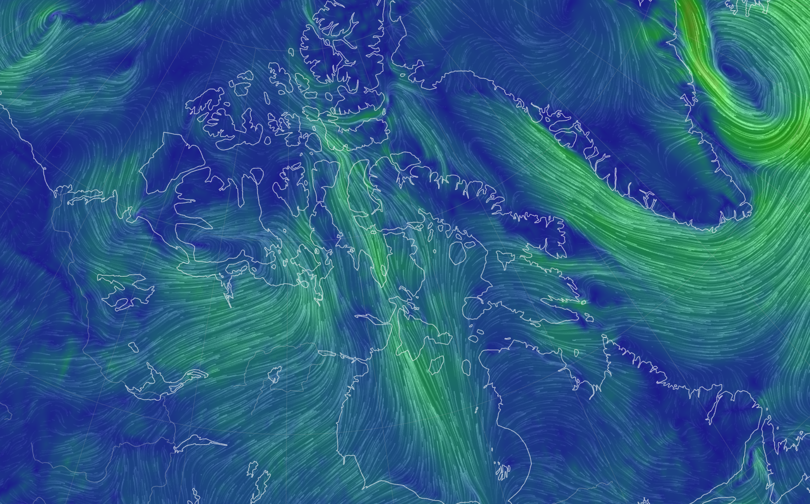
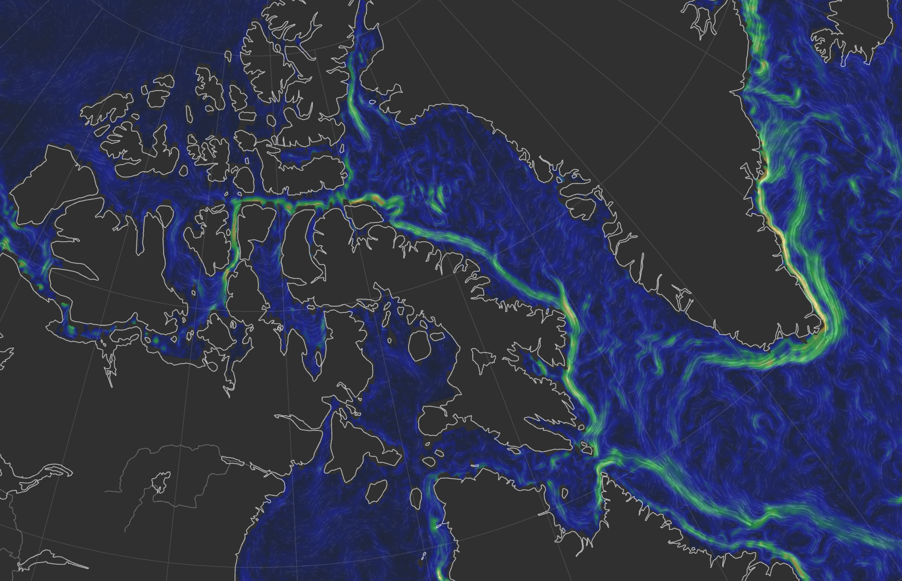
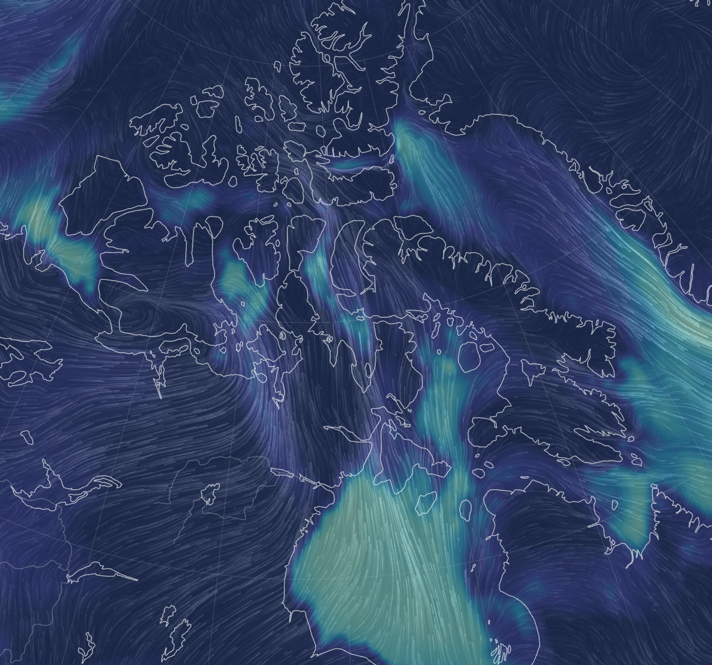
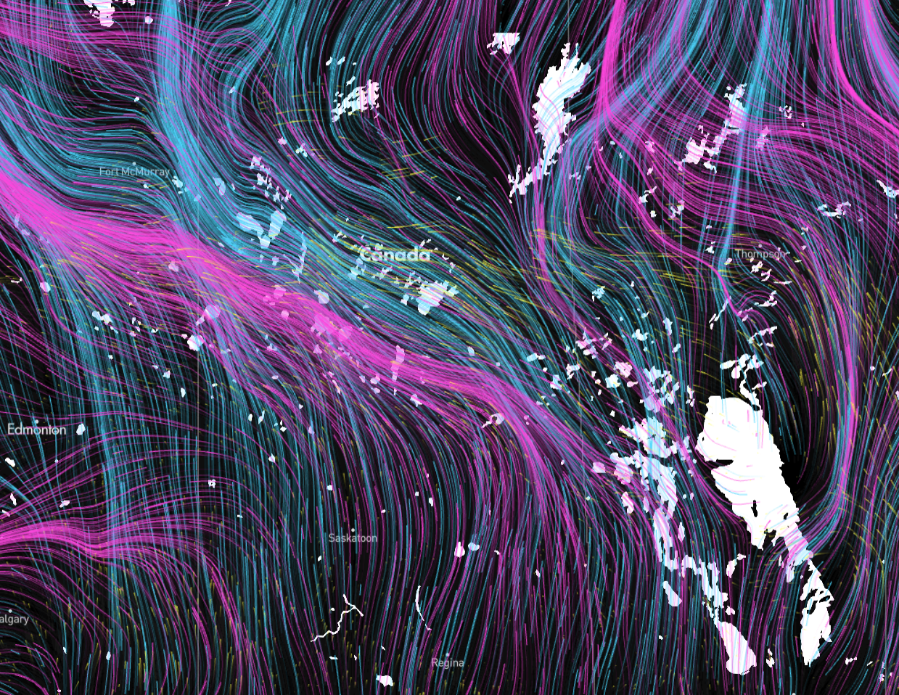
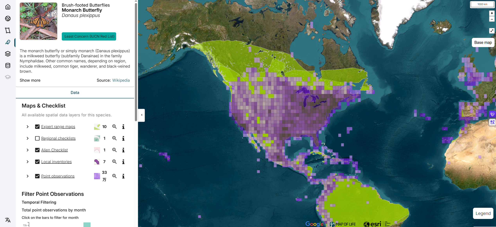
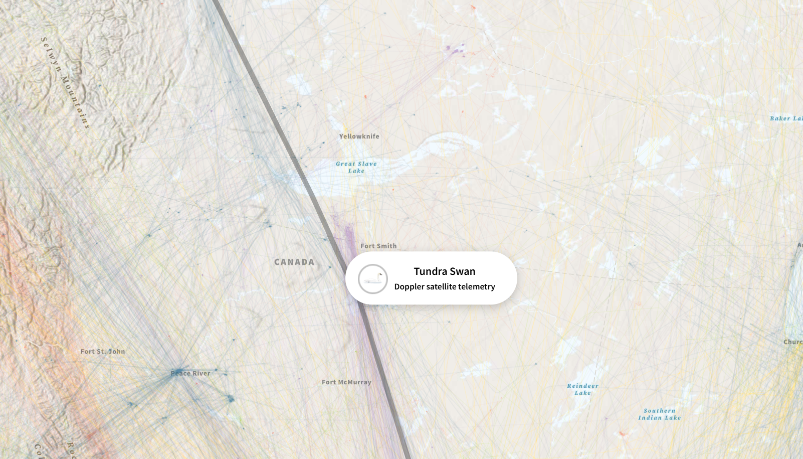
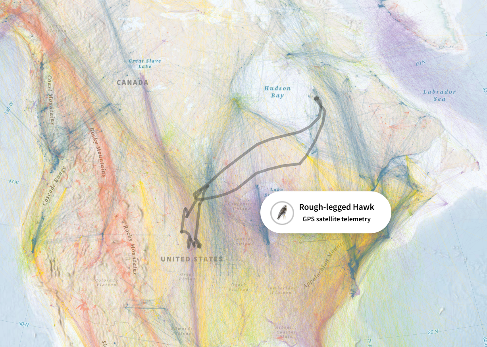

Design Journal
Week 2
Design Journal
Junming He
Hochelaga Archipelago
September 21, 2026
What I Worked On
This week, I mainly took part in group discussions, shared my understanding of the project, and made sure that I was on the same page as the rest of the team.
During the discussion, I looked at the project from a UX Designer’s perspective and brought up what I think the current design goal could be, as well as some questions we should ask in our next client meeting. At this point, I see the design goal as introducing a certain type of user to the inter-relations between the islands of the Hochelaga Archipelago and the different elements connected to them, such as humans, fish, birds, pollution, and waterways.
One of the main questions we still need to answer is: who exactly are we designing this project for?
I think the target audience will strongly affect how the project should present information. For example, if the project is designed for children, images, animation, and other visual elements may need to be the main way of communicating information. If it is designed for students, we could include more written explanations alongside the visuals to provide more detail. Because of this, I also brought up that we should use the answers from the next client meeting to help decide both the form and the scope of the project.
Research
After the group discussion, I started looking at different map references. I first looked at Google Maps and paid attention to common map features, such as different layers, satellite view, and what kinds of information are usually shown for a location. I wanted to first understand how a more traditional map organizes information before thinking about how our project could approach it differently.
After that, I looked at more dynamic and interactive maps, including maps showing ocean currents, atmospheric movement, animal migration, and species distribution. I was especially interested in how these maps use movement, layers, and interaction to show connections between different places instead of simply marking locations on a map.
These references have not directly decided the final direction of the project yet, but they gave me a clearer idea of what an interactive map could look like and what kinds of interactions might be possible. They can also give us something more concrete to discuss in the next group meeting.
Research Images









